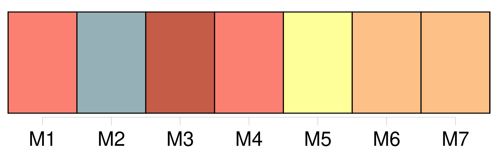
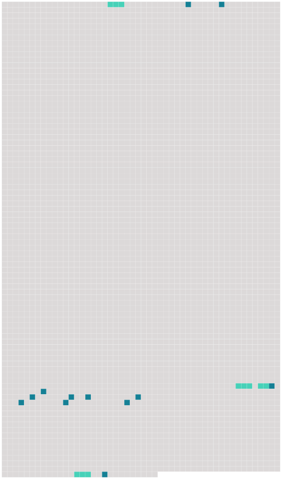

Longueur nb maillons : 16 mentions |
  |
Au détour d’ une rue, pendant que le jeune prêtre tournait la tête d’ un autre côté, [un page nègre] , bizarrement vêtu, s’ approcha de moi, et me [remit] , sans s’ arrêter dans [sa] course, un petit portefeuille à coins d’ or ciselés, en me faisant signe de le cacher ; je le fis glisser dans ma manche et l’ y tins jusqu’ à ce que je fusse seul dans ma cellule. [114 phrases] [Un page nègre] , [le même] [qui] m’ avait donné les tablettes de Clarimonde et [que] je reconnus à l’ instant, me vint aider à descendre, et un majordome, vêtu de velours noir avec une chaîne d’ or au col et une canne d’ ivoire à la main, s’ avança au-devant de moi. De grosses larmes débordaient de [ses] yeux et coulaient le long de [ses] joues sur [sa] barbe blanche. [1 phrases] fit [-il] en hochant la tête, trop tard!! [1 phrases] » [Il] me prit par le bras et me [conduisit] à la salle funèbre ; je pleurais aussi fort que [lui] , car j’ avais compris que la morte n’ était autre que cette Clarimonde tant et si follement aimée. [19 phrases] [Ce page noir] ne peut [-il] être passé au service d’ une autre femme?? |
 |
La ressource peut être téléchargée sur la page Ortolang
Si vous avez des questions ou vous voyez des erreurs, merci d'envoyer un mail à silvia.federzoni89@gmail.com
Site développé par S. Federzoni (contact)